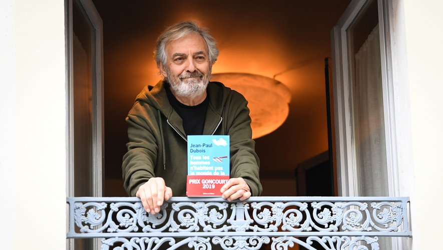

Jean-Paul Dubois sinh năm 1950 tại Toulouse, Pháp. Ông theo học ngành xã hội học rồi trở thành nhà báo. Ban đầu ông viết cho mục thể thao trên tờ Sud Ouest, rồi đầu quân cho tờ Matin de Paris, sau đó trở thành phóng viên của tuần san Le Nouvel Observateur. Ông đã xuất bản khoảng hai mươi tiểu thuyết, một tiểu luận, hai tập truyện ngắn và hai tuyển tập các bài báo. Ông từng giành được nhiều giải thưởng quan trọng, trong đó phải kể đến giải Goncourt năm 2019 dành cho tiểu thuyết Không ai sống giống ai trong cuộc đời này.

NHÃ NAM | VĂN HỌC HIỆN ĐẠI
Trong một buồng giam ở nhà tù Bordeaux, nằm bên dòng Prairies, Paul Hansen lần hồi lại cuộc đời mình. Là kết quả của cuộc hôn phối kỳ lạ giữa một mục sư đạo Tin Lành người Đan Mạch và một nữ chủ rạp chiếu phim, dường như Paul đã tìm được bến đỗ cuộc đời mình với công việc bảo vệ kiêm quản gia ở tòa nhà L’Excelsior bên Winona cùng những chuyến bay giữa mênh mông tuyết trắng ở các vùng hồ Montréal. Nhưng khi tòa nhà có viên trưởng ban quản trị mới, mọi thứ đột ngột thay đổi và điều không thể tránh khỏi xảy đến... Một nhà thờ chìm lấp giữa những đụn cát, các khu mỏ a-mi-ăng lộ thiên, những khúc uốn của một con sông lấp lánh ánh bạc, những làn sóng âm vang lên từ một cây đàn organ được đặt trong nhà thờ,... tất cả cùng diễu qua trong mạch kể của một cuốn tiểu thuyết hết sức đặc biệt. Là câu chuyện về đời người, Không ai sống giống ai trong cuộc đời này là một trong những tác phẩm đẹp nhất của Jean-Paul Dubois.
“Ở đây tập hợp tất cả những gì chúng ta yêu mến ở Jean-Paul Dubois. Mọi thứ đều hiện diện: gia đình, Toulouse, Canada, thiên nhiên, nỗi u hoài, sự giễu cợt và khiếu hài hước khôn cưỡng.” (Le Figaro)
“Giống như trong mọi tác phẩm của mình, Jean-Paul Dubois biết cách làm cho thế giới u hoài của mình trở nên đáng ao ước.” (Télérama)
“Một ly cocktail pha trộn giữa hài hước, thông minh và cảm xúc được phục vụ với sự lịch thiệp đầy thư thái.” (Le Figaro)
Tặng Hélène,
Tặng Tsubaki, Arthur và Louis.
Tặng Vincent Landel, người tôi nhớ.
Tưởng nhớ Jean-Michel Tarascon và Michel Ramonet.
Tôi dành hết tình âu yếm của mình cho Geneviève, Claire và Didier.
Xin gửi những lời cảm ơn tự đáy lòng tôi đến Serge Asselin vì sự giúp đỡ thân tình và kinh nghiệm quý báu của anh.
Xin gửi tình cảm trìu mến của tôi đến Frédéric, và lời chúc trường thọ đến Oita.
Xin gửi tình cảm quyến luyến của tôi đến Pascal, quý ông Québec và Guy, người lái xe mô tô ba bánh xuyên Canada.
“Toàn bộ điều này khiến ta nghĩ đến chuỗi ngày không gì định dạng hay định hướng nổi, cũng chẳng có gì lưu lại hay khuấy động lên, và ở đó chẳng điều gì có nghĩa.” ROSALIND KRAUSS
“Tôi phải lãng quên cái ngày này. Mất mười đô la ở trường đua hôm nay. Thật là một điều vô ích. Tốt hơn hết là cho tôi nhét của quý vào một chiếc bánh kếp rưới xi rô phong.” Charles BUKOWSKI, Về việc viết lách